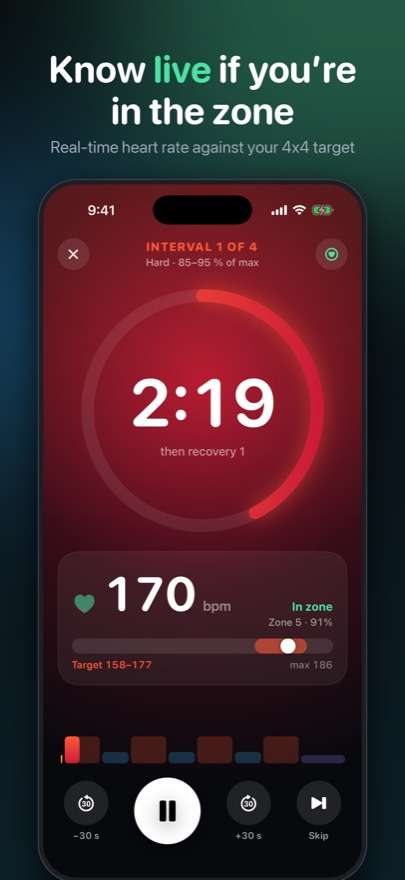
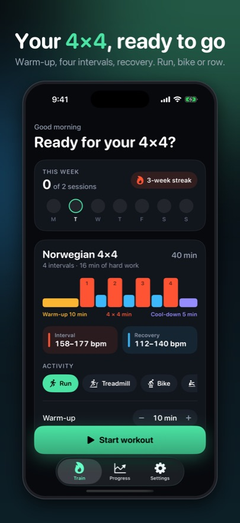
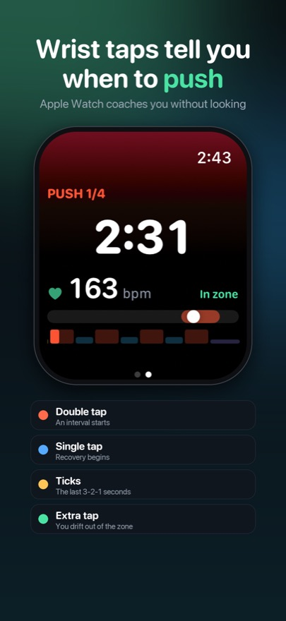
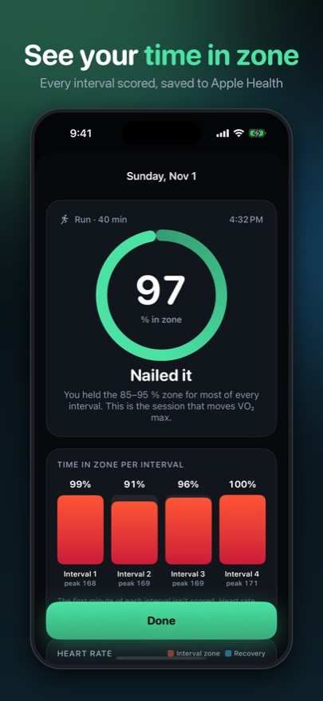
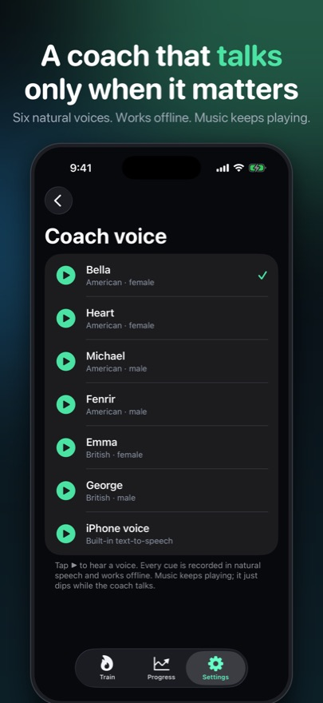

The Norwegian 4x4 coach that tells you live if you’re in the zone.
Four 4-minute pushes at 85 to 95 percent of max heart rate, coached by your Apple Watch, a heart-rate strap or just your ears.
Free to use. Pro $9.99 once. No subscription, no account, nothing collected.
What’s on it
- A1Live heart rate with a target-zone bar: below, in zone or above
- A2Natural coach voice that only speaks when you drift out of zone
- A3Apple Watch app with wrist taps for every interval and recovery
- A4Works with any Bluetooth heart-rate strap, or no sensor at all
- B1Lock screen Live Activity and Dynamic Island countdown
- B2Time-in-zone score for every session, saved to Apple Health
- B3Run, treadmill, bike, rower, ski erg or uphill walk
- B4Pro: VO2 max trend, full history and custom intervals
Inside the sleeve





Questions
Is Nordpuls a subscription?
No. The Norwegian 4x4 with live heart-rate coaching is free. Nordpuls Pro is a single $9.99 purchase that unlocks the VO2 max trend, time-in-zone history, full workout history and custom intervals. Nothing renews.
Do I need an Apple Watch?
No. An Apple Watch gives you live heart rate on your wrist plus wrist taps. Any Bluetooth heart-rate strap also works, or you can train with the timer and voice cues alone.
How does the coaching work?
Nordpuls shows your live heart rate against the 85 to 95 percent target zone. It stays quiet for the first minute of each interval, because heart rate lags effort, and only speaks up if you stay out of the zone for a while: push a little harder, or ease off.
Does it collect my data?
No. There is no account, no server, no analytics and no ads. Your heart rate, workouts and settings stay on your iPhone and Apple Watch, and your workouts are saved to Apple Health only if you allow it.
Is Nordpuls a medical device?
No. It is a training tool. High-intensity exercise is not right for everyone, so check with a doctor first if you have a heart condition or have not exercised in a while.
Help and legal
Support · Privacy policy · Terms of use · gefjonstudio@gmail.com